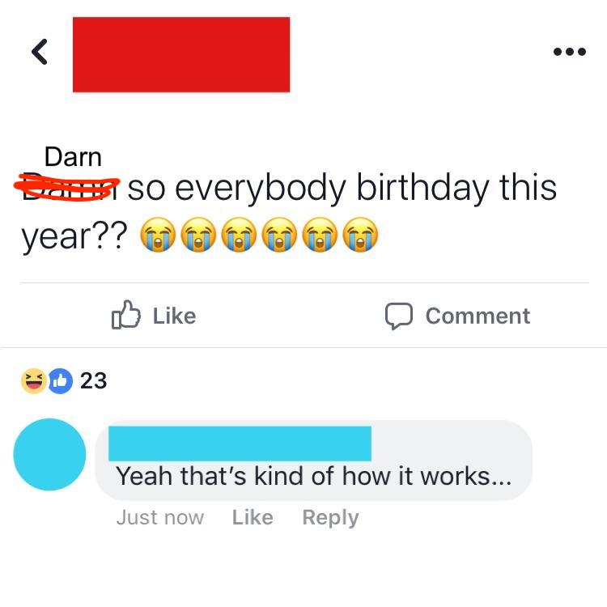
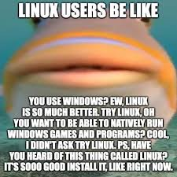
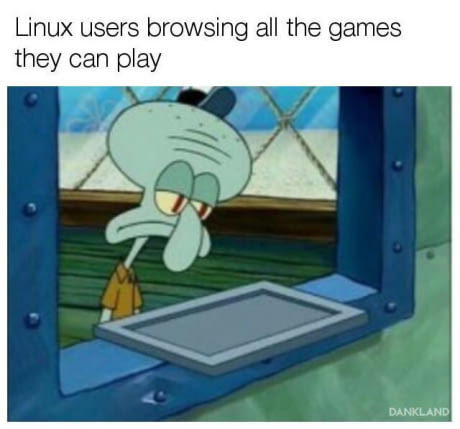
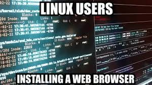

Today we celebrated the 31st birthday of the operating system that has revolutionized the world of technology - Linux. And just like last year, we celebrated it with much fanfare, (cup)cakes, and a slideshow that might look a little familiar.
Our beloved Professor Bui kicked off the meeting with the reason for the season: the origins of Linux and the hacker ethic that brought it to life. Club members reminisced about their favorite Linux memories, from privacy and hackability (zenciso) to learning about Linux from fellow members like dblitt (cbowers4). Our personal favorite was jabbott’s memory of the argument between Tanenbaum and Torvalds where Torvalds equated himself to Albert Einstein (🤓).

Birthdays can get a little old, so this year we decided to spice things up. Instead of just reminiscing, we gave *nix a little roast in true birthday fashion. We shared hilarious Linux memes that we found on the internet and did not hold back (sorry Arch). It was a great way to celebrate the OS we all know and love.
As for the cupcakes, they were delicious, and we can’t wait to do it all again next year. Even though it might seem silly to celebrate an operating system’s birthday every year, Linux is much more than just software - it’s a symbol of the hacker ethic, of open-source, and of a community that believes in the power of collaboration.
Here’s to another year of celebrating Linux and all that it has brought to our lives! (not /s)
Some of our favorite memes from the evening:
  